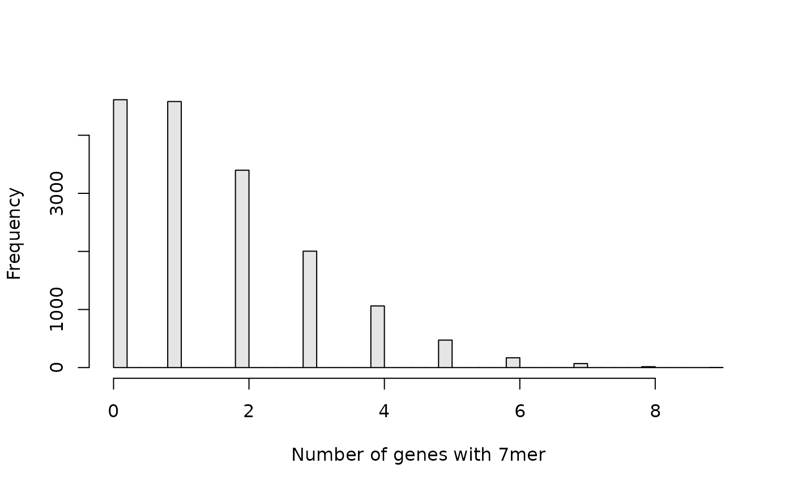

Transcript library k-mer counts with Biostrings
Tareian Cazares
SeedMatchR_sequence_kmer_counts.Rmd
library(SeedMatchR)Determine transcript library k-mer counts with Biostrings
This article will show you how to determine the transcriptome k-mer counts for your transcriptome of interest.
Find hg38 7-mer counts across canonical ENSEMBL transcripts
Load annotations
annodb <- load_annotations("hg38", feature.type = "exons")
#> Build AnnotationFilter for transcript features based on the following parameters:
#> Keep only standard chroms: TRUE
#> Remove rows with NA in transcript ID: TRUE
#> Keep only protein coding genes and transcripts: TRUE
#> Filtering for transcripts with support level: FALSE
#> Keep only the ENSEMBL canonical transcript: TRUE
#> Filtering for specific genes: FALSE
#> Filtering for specific transcripts: FALSE
#> Filtering for specific gene symbols: FALSE
#> Filtering for specific entrez id: FALSE
#> Warning: replacing previous import 'S4Arrays::makeNindexFromArrayViewport' by
#> 'DelayedArray::makeNindexFromArrayViewport' when loading 'SummarizedExperiment'
#> Loading annotations from AnnotationHub for hg38
#> downloading 1 resources
#> retrieving 1 resource
#> loading from cache
#> require("rtracklayer")
#> downloading 1 resources
#> retrieving 1 resource
#> loading from cache
#> require("ensembldb")
#> Extracting exons from ensembldb object.
#> Extracting sequences for each feature.
#> Keeping sequences that are >= 8Create data frame for mapping tx_ix to gene_id
# Create a data frame to map tx_id to gene_id
tx2gene <- mcols(transcripts(annodb$txdb, columns=c("tx_id", "gene_id")))
#> Warning in valid.GenomicRanges.seqinfo(x, suggest.trim = TRUE): GRanges object contains 1 out-of-bound range located on sequence LRG_432.
#> Note that ranges located on a sequence whose length is unknown (NA) or on a
#> circular sequence are not considered out-of-bound (use seqlengths() and
#> isCircular() to get the lengths and circularity flags of the underlying
#> sequences). You can use trim() to trim these ranges. See
#> ?`trim,GenomicRanges-method` for more information.
tx2gene$gene_id <- as.character(tx2gene$gene_id)Get counts data
# only focus on ten sequences since the run can take a while during testing.
exon.counts = sequence_kmer_counts(annodb$seqs[1:10], tx2gene, width = 7)
exon.counts[1:3, 1:5]
#> tx_id gene_id AAAAAAA AAAAAAC AAAAAAG
#> 1 ENSG00000004059 <NA> 0 0 0
#> 2 ENSG00000003056 <NA> 6 3 0
#> 3 ENSG00000173153 <NA> 1 0 0Convert to K-mer summary table
exon.binary = as.matrix(exon.counts[3:ncol(exon.counts)])
exon.binary[exon.binary > 0] <- 1
exon.gene.counts = colSums(exon.binary)
exons.df = data.frame("exon.counts" = exon.gene.counts)
head(exons.df)
#> exon.counts
#> AAAAAAA 5
#> AAAAAAC 3
#> AAAAAAG 4
#> AAAAAAT 4
#> AAAAACA 3
#> AAAAACC 3
hist(exon.gene.counts, breaks = 50, xlab = "Number of genes with 7mer", col = "grey90", main = NULL)